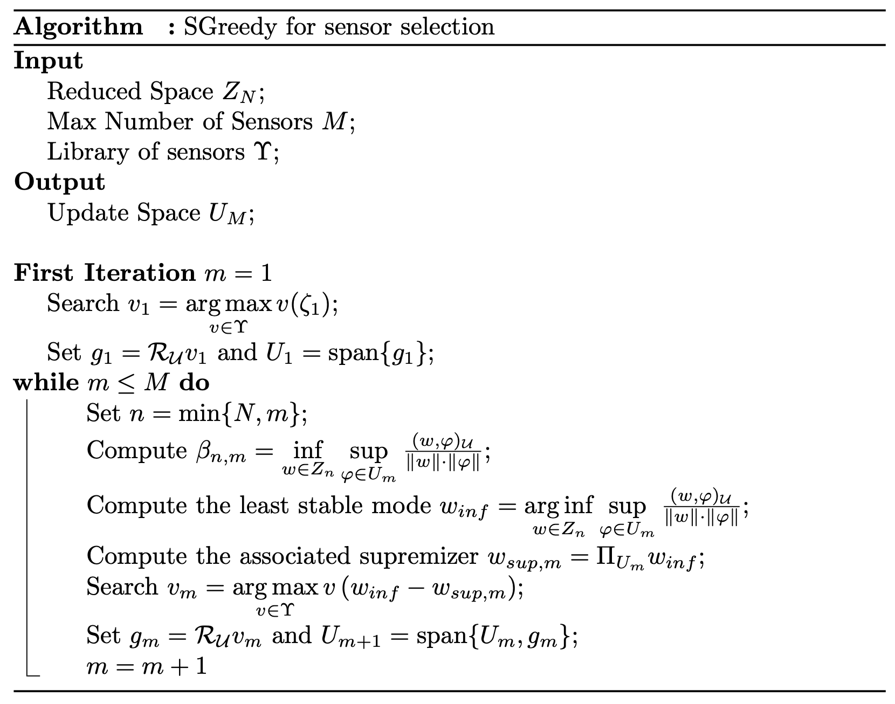

Offline Phase: SGREEDY algorithm for sensor placement
Aim of the tutorial: this notebook shows how to use the SGREEDY algorithm for sensor placement starting from a reduced basis, e.g., the POD modes.
To execute this notebook it is necessary to have the POD modes stored in Offline_results/BasisFunctions folder, placed in this directory (otherwise modify path_off variable).
[1]:
import numpy as np
import os
from IPython.display import clear_output
import pickle
from dolfinx.fem import FunctionSpace
from pyforce.tools.write_read import ImportH5, StoreFunctionsList
from pyforce.tools.functions_list import FunctionsList
path_off ='./Offline_results/'
The geometry is imported from “ANL11A2_octave.geo”, generated with GMSH. Then, the mesh is created with the gmsh module.
[2]:
from neutronics import create_anl11a2_mesh
domain, _, _ = create_anl11a2_mesh(use_msh=True, save_mesh=False)
fuel1_marker = 1
fuel2_marker = 2
fuel_rod_marker = 3
refl_marker = 4
void_marker = 10
sym_marker = 20
clear_output()
Let us import the POD modes, using the ImportH5 function from the pyforce package.
[3]:
# Defining the functional space
V = FunctionSpace(domain, ("Lagrange", 1))
# Define the variables to load
var_names = [
'phi_1',
'phi_2'
]
tex_var_names = [
r'\phi_1',
r'\phi_2'
]
bf = dict()
for field_i in range(len(var_names)):
bf[var_names[field_i]] = ImportH5(V, path_off+'/BasisFunctions/basisPOD_'+var_names[field_i], 'POD_'+var_names[field_i])[0]
SGREEDY for POD basis
The SGREEDY algorithm, Maday et al. (2014), aims at maximising the inf-sup constant \(\beta_{N,M}\): roughly speaking, this constant measures how the sensors can include unmodelled physics with respect to the one embedded in the reduced basis.
The overall algorithm is summarised in the following figure from Riva et al. (2024)

As for the GEIM method, three different values of the point spread will be considered: 0.1, 1 and 2.5. The SGREEDY method is implemented in the pyforce package, and it is called by SGREEDY: the class must be initialised with the domain, the basis functions (the POD modes in this case), the functional space in which the snapshots live, the name of the variable and the value of the point spread.
[4]:
from pyforce.offline.sensors import SGREEDY
s = 2.
sgreedy_pod = dict()
for field_i in range(len(var_names)):
sgreedy_pod[var_names[field_i]] = [SGREEDY(domain, bf[var_names[field_i]], V, var_names[field_i], s)]*2
Since the snapshots belong to \(H^1\subset L^2\), the Riesz representation of a functional is sought in this space, endowed with the inner product \begin{equation*} \left(u,v\right)_{H^1}=\int_\Omega \nabla u\cdot \nabla v\,d\Omega + \int_\Omega u\cdot v\,d\Omega \end{equation*} The results will be compared with the approximation properties of the case with the Riesz representation in \(L^2\), whose inner product is \begin{equation*} \left(u,v\right)_{L^2} = \int_\Omega u\cdot v\,d\Omega \end{equation*}
The SGREEDY algorithm is called by the method generate from the SGREEDY class: it requires the dimension of the reduced space to use, the maximum number of sensors to place and a tolerance value for the stability-loop of the algorithm. Moreover, the method can have the optional parameters verbose and sampleEvery, which allow to print the progress and telling how many cells are to be used, respectively. In the end, there is a switch option for the use of the Riesz representation
in \(H^1\) or \(L^2\).
[5]:
Nmax = 10
Mmax = 20
sam_every = 4
is_H1 = [False, True]
fun_space_label = ['L2', 'H1']
for field_i in range(len(var_names)):
for kk in range(len(is_H1)):
print('SGREEDY for '+var_names[field_i]+' with s={:.2f}'.format(s)+' and Riesz representation in '+fun_space_label[kk])
sgreedy_pod[var_names[field_i]][kk].generate( Nmax, Mmax, tol = 0.2,
sampleEvery = sam_every,
verbose=False, is_H1 = is_H1[kk])
print(' ')
SGREEDY for phi_1 with s=2.00 and Riesz representation in L2
SGREEDY for phi_1 with s=2.00 and Riesz representation in H1
SGREEDY for phi_2 with s=2.00 and Riesz representation in L2
SGREEDY for phi_2 with s=2.00 and Riesz representation in H1
We can store the sensors using the StoreFunctionsList method.
[6]:
for field_i in range(len(var_names)):
for kk in range(len(is_H1)):
StoreFunctionsList( domain, sgreedy_pod[var_names[field_i]][kk].basis_sens,
'SGREEDYPOD_' +var_names[field_i]+'_s_{:.2e}'.format(s),
path_off+'/BasisSensors/sensorsSGREEDYPOD_' + var_names[field_i]+'_s_{:.2e}_'.format(s)+fun_space_label[kk])